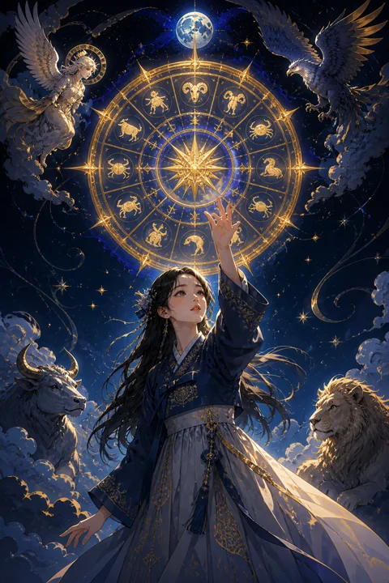

X 운명의 수레바퀴 카드 — 돌고 도는 흐름의 전환점
운명의 수레바퀴 카드 한눈에 보기
운명의 수레바퀴 카드 상징 읽기

동네보살의 카드 그림은 전통 라이더–웨이트 덱의 뜻을 새 그림으로 옮긴 것입니다. 아래 상징 설명은 전통 덱의 그림을 기준으로 합니다.
카드 한가운데에는 공중에 떠서 돌아가는 커다란 바퀴가 있습니다. 바퀴에 새겨진 글자들은 타로와 신의 이름 등으로 풀이되며, 세상의 법칙이 쉬지 않고 순환한다는 것을 보여줍니다.
바퀴 꼭대기에는 칼을 든 스핑크스가 균형을 지키며 앉아 있고, 오른쪽 아래로는 붉은 짐승 형상이 떠받치며 올라오고, 왼쪽에는 뱀이 미끄러져 내려갑니다. 오르는 존재와 내려가는 존재가 함께 그려진 것은 좋은 때와 어려운 때가 번갈아 온다는 뜻입니다.
네 모서리에는 천사, 독수리, 사자, 황소가 구름 위에서 책을 펼치고 있습니다. 네 방위와 계절처럼 변하지 않는 질서를 상징하며, 변화 한가운데서도 배우는 자세를 잃지 말라는 메시지를 담고 있습니다. 바퀴 중심의 작은 원은 모든 변화 속에서도 흔들리지 않는 나의 중심을 가리킵니다.
운명의 수레바퀴 카드 정방향 뜻
정방향의 운명의 수레바퀴는 막혀 있던 흐름이 움직이기 시작하는 순간을 알립니다. 오래 기다리던 소식이 오거나, 우연히 만난 사람이나 사건이 생각지 못한 방향으로 문을 열어 줄 수 있습니다.
이 카드가 말하는 행운은 하늘에서 그냥 떨어지는 선물이라기보다 준비한 사람에게 맞물리는 타이밍에 가깝습니다. 그동안 묵묵히 쌓아 온 것이 있다면 지금 그 결과가 바깥으로 드러날 차례입니다.
변화가 찾아왔을 때 익숙한 방식만 고집하기보다 가볍게 올라타는 태도가 유리합니다. 계획에 없던 제안이라도 한 번 들여다볼 가치가 있습니다. 바퀴는 계속 돌기 때문에 지금의 좋은 흐름을 감사히 쓰되, 여유가 있을 때 다음을 대비해 두는 지혜도 함께 챙기세요. 좋은 흐름 속에서 주변과 기쁨을 나누면 운도 더 오래 머물기 쉽습니다.
운명의 수레바퀴 카드 역방향 뜻
역방향의 수레바퀴는 내 뜻과 상관없이 일정이 틀어지거나 뜻밖의 변수가 끼어드는 시기를 보여줍니다. 잘 진행되던 일이 잠시 멈추거나 같은 문제가 되풀이되는 느낌이 들 수 있습니다.
그렇다고 운이 영영 등을 돌렸다는 뜻은 아닙니다. 바퀴는 거꾸로 놓여도 여전히 돌고 있으며, 내려가는 구간이 있어야 다시 올라가는 구간도 옵니다.
이 방향에서 가장 조심할 것은 모든 것을 내 손으로 통제하려는 마음입니다. 흐름을 억지로 되돌리려 애쓸수록 더 지치기 쉽습니다. 대신 이번 변수에서 반복되는 패턴이 무엇인지 살펴보세요. 같은 실수가 되풀이되고 있다면 그 고리를 끊는 계기가 될 수 있습니다. 한 템포 늦추고 대안을 마련해 두는 것이 현명합니다. 흐름이 다시 바뀌는 날은 생각보다 가까이 있을 수 있습니다.
연애에서 운명의 수레바퀴 카드
솔로라면 생각지 못한 장소나 계기로 인연이 닿을 수 있는 흐름입니다. 평소 가지 않던 모임에 나가거나 오랜만에 연락 온 지인을 만나는 일이 새로운 만남으로 이어질 수 있으니, 기회가 왔을 때 너무 재지 말고 가볍게 응해 보세요.
연애 중이라면 관계가 한 단계 달라지는 전환점을 맞이할 수 있습니다. 함께 사는 이야기, 가족 소개, 거리의 변화처럼 둘을 둘러싼 환경이 바뀌면서 관계의 모양도 달라지는 시기입니다. 변화 자체를 두려워하기보다 두 사람이 같은 방향으로 움직이고 있는지 확인하는 대화가 중요합니다. 흐름이 좋을 때 서로에게 고마움을 표현해 두면 이후의 굴곡도 함께 넘기 쉬워집니다. 인연은 붙잡으려 할 때보다 자연스럽게 흘러가도록 둘 때 더 잘 맞물리곤 합니다. 일상의 작은 우연을 가볍게 넘기지 말고 눈여겨보세요.
재회·속마음 질문에서 운명의 수레바퀴 카드
재회 질문에 운명의 수레바퀴가 나오면 끊겼던 인연이 다시 이어질 계기가 찾아올 수 있다는 뜻으로 읽힙니다. 상대 역시 상황이나 마음의 변화를 겪으며 지난 관계를 다시 떠올리고 있을 수 있습니다. 다만 같은 문제로 헤어졌다면 바퀴가 제자리로 돌아오듯 똑같은 갈등이 반복될 수 있으니, 다시 만난다면 무엇을 다르게 할지 먼저 정리해 두세요. 상대의 마음에도 그리움과 망설임이 번갈아 오가는 중이라고 볼 수 있습니다. 연락이 닿는다면 지난 잘잘못을 따지기보다 지금 서로의 달라진 모습을 편하게 나누는 데서 시작하는 편이 흐름을 살리는 방법입니다.
일·금전에서 운명의 수레바퀴 카드
일에서는 인사이동, 새로운 거래처, 예상 밖의 제안처럼 판이 바뀌는 사건이 생기기 쉬운 시기입니다. 준비해 둔 이력이나 작업물이 있다면 기회가 왔을 때 바로 내밀 수 있도록 정돈해 두세요. 변화에 빨리 적응하는 사람이 흐름의 이득을 가져갑니다.
금전 흐름은 들어오는 때와 나가는 때가 번갈아 오는 모습입니다. 수입이 늘어나는 시기에 씀씀이를 함께 키우기보다 일부를 떼어 두면 흐름이 꺾일 때 흔들림이 줄어듭니다. 운이 좋다고 느껴질 때일수록 무리한 판단은 피하는 것이 좋습니다. 새로운 기회가 여러 개 동시에 몰려온다면 모두 잡으려 하기보다 지금 내 방향과 가장 잘 맞는 하나를 고르는 판단이 필요합니다. 고르지 않은 기회도 다음 바퀴에서 다시 찾아올 수 있습니다.
운명의 수레바퀴 카드는 예일까 아니오일까
운명의 수레바퀴는 흐름이 좋은 쪽으로 돌아가는 시점을 가리켜 대체로 예로 읽습니다. 다만 타이밍이 핵심이라 망설이면 기회가 지나가고, 역방향이면 지금은 때가 아니니 한 번 더 기다려 보라는 뜻에 가깝습니다.
자주 묻는 질문
운명의 수레바퀴 카드 역방향은 나쁜 뜻인가요?
역방향의 수레바퀴는 내 뜻과 상관없이 일정이 틀어지거나 뜻밖의 변수가 끼어드는 시기를 보여줍니다. 잘 진행되던 일이 잠시 멈추거나 같은 문제가 되풀이되는 느낌이 들 수 있습니다.
운명의 수레바퀴 카드가 연애 질문에 나오면요?
솔로라면 생각지 못한 장소나 계기로 인연이 닿을 수 있는 흐름입니다. 평소 가지 않던 모임에 나가거나 오랜만에 연락 온 지인을 만나는 일이 새로운 만남으로 이어질 수 있으니, 기회가 왔을 때 너무 재지 말고 가볍게 응해 보세요.
타로 카드는 어떻게 뽑나요?
타로 카드 페이지에서 카드를 섞으면 메이저 아르카나 22장이 펼쳐집니다. 마음이 가는 세 장을 고르면 과거·현재·미래 자리에 놓이고, 한 장씩 뒤집어 자리와 방향에 맞는 풀이를 읽습니다. 정방향과 역방향은 섞는 순간 정해집니다.